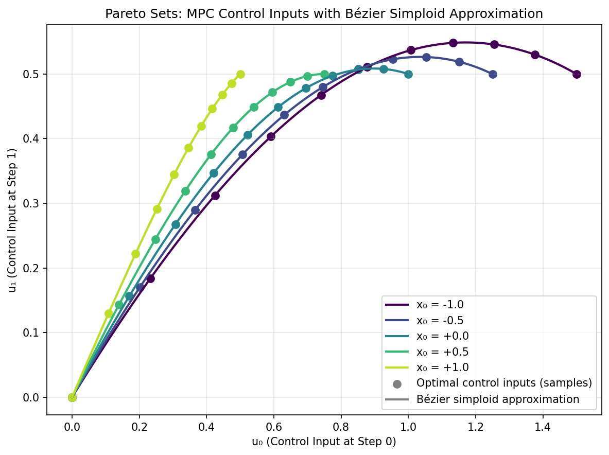
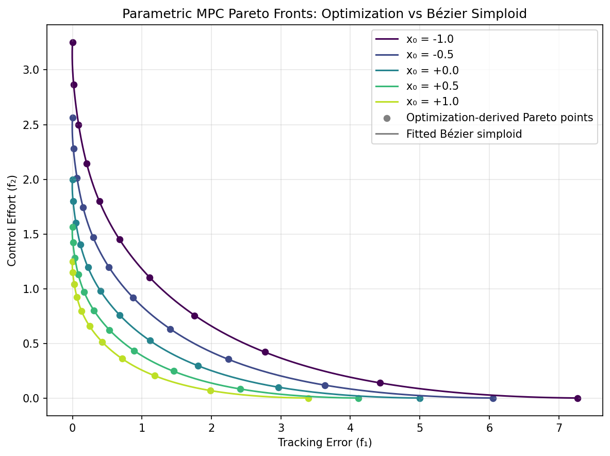

Multi-Objective Model Predictive Control
In industrial automation and robotics, Model Predictive Control (MPC) and Linear Quadratic Regulators (LQR) are foundational algorithms used to optimize future behavior in real-time. Operating chemical plant processes, for instance, requires rigorously balancing product quality tracking (setpoint proximity) against the suppression of abrupt heater and valve modifications (machinery wear).
Similarly, omnidirectional mobile robots traversing complex environments (e.g., hospitals or warehouses) must optimize trajectory tracking while minimizing energy consumption and avoiding collisions. However, they face significant physical constraints like nonlinear friction modes. Over a predictive horizon \(H\), these systems evaluate competing objectives to find the strictly optimal control sequence \(U\):
where \(y_k\) denotes system states/outputs, \(r_k\) the target setpoints, \(u_k\) the operational inputs, and \(\Delta u_k\) the input change rates.
For linear dynamics, eliminating states produces quadratic objectives in the control sequence. A positive-definite penalty on every independent input gives strong convexity of that objective. Tracking and input-difference terms require their own rank checks. In a mixed-integer problem, curvature within each fixed mode does not establish a continuous solution map across mode changes.
An offline polynomial surrogate can reduce online evaluation cost over a specified parameter range. Its use in a controller also requires checking input and state constraints, closed-loop behavior and evaluation latency. Strong convexity of the reference problem alone gives none of those guarantees for an approximate control law.
Numerical Experiments
An MPC controller solves the same problem again at every sampling instant, each time from a different measured state. The optimal inputs therefore depend not only on the objective weights \(w\) but also on the initial state \(x_0\). Their joint parameter space is the product of the weight simplex and an interval, i.e., the square \(\Delta^1 \times \Delta^1\), which is a simploid rather than a simplex (see Single and assembled domains). We therefore fit a Bézier simploid of type \((1, 1)\) that represents, in one polynomial, the Pareto sets and fronts for all initial states — an explicit multi-objective MPC law.
Problem Setup:
Stable 1D system: \(x(k+1) = 0.5\,x(k) + u_k\), target \(r = 1\), horizon \(H = 5\)
Initial state: \(x(0) = x_0 \in [-1, 1]\)
Control sequence: \(U = [u_0, u_1, u_2, u_3, u_4] \in \mathbb{R}^5\)
Competing objectives:
Parameter of the simploid: \((w_1, w_2, v_1, v_2) \in \Delta^1 \times \Delta^1\) with \(x_0 = -v_1 + v_2\)
Both objectives are strongly convex in \(U\) with comparable curvature, so \(U^*(w, x_0)\) is a smooth rational function of \(w\). For a fixed \(w\), it is affine in \(x_0\), and the objective values are quadratic in \(x_0\).
Experiment Procedure:
Sample an \(11 \times 5\) grid on the square: 11 weight vectors from \(w = (1,0)\) to \((0,1)\) and 5 initial states from \(x_0 = -1\) to \(1\).
For each \((w, x_0)\), solve \(U^*(w, x_0) = \arg\min_U [w_1 f_1(U; x_0) + w_2 f_2(U)]\) using L-BFGS-B.
Collect the Pareto front points \((f_1, f_2)\) and the Pareto set points \(U^*\).
Fit Bézier simploids of type \((1, 1)\) with
torch_bsf.fit(): degree \((6, 2)\) for the Pareto front and \((6, 1)\) for the Pareto set.Evaluate the fitted simploids on a \(41 \times 21\) test grid.
On the test grid, the maximum error is about \(0.01\) on the Pareto front (0.2% of the range of \(f_1\)) and below \(10^{-3}\) on the Pareto set. The figures show the curves of the fitted simploids for the five sampled initial states.
 |
 |
Pareto sets. |
Pareto fronts. |


The complete example script is available at examples/generate_mpc_pareto.py.
Read the simploid as a family of trade-off curves
The left panel of the simploid overview shows a square-domain map. Here its first interval controls objective priorities and its second controls initial state. Fixing the second factor selects one Pareto curve; sweeping it gives a family of curves. Fixing the first factor instead shows how the preferred policy changes with initial state at one chosen priority.
For a requested state, compute \(v_2=(x_0+1)/2\) and
\(v_1=1-v_2\). A row [w1, w2, v1, v2] contains two independently
normalized blocks. At \(x_0=0\), the second block is [0.5, 0.5].
The row sums to two; normalizing it globally would invalidate the domain.
The model covers \(-1\le x_0\le1\). A state outside that interval
requires another modeled range or a different controller policy.
Represent the two output maps explicitly
The decision map uses BezierSpace.simploid((1, 1), degree=(6, 1)) and
returns five control inputs. It has \(7\times2=14\) global controls,
each with five output coefficients. The front map uses degree (6, 2)
and two outputs, with \(7\times3=21\) controls. Their domain type is
identical even though capacity and output width differ.
The unequal degrees reflect the reference solution: at fixed priority the optimal input sequence is affine in initial state, while its quadratic costs depend quadratically on that state. Dependence on the priority factor is generally rational and is only approximated by degree six. Increasing state degree cannot compensate for insufficient priority degree; compare errors along each factor before adding controls.
To build the data, keep all 55 parameter rows aligned with the five-column
control array and two-column objective array. Fit each array separately with
Samples and inspect the returned solve diagnostics. The same row order
must be used for both factors and every output. Product grids and their
growth are explained in Grid sampling.
Assess a policy rather than only a front
Use new combinations of priorities and initial states for validation, including corners and edges of the square. The stated test grid includes training locations as well as new ones; report errors on the new locations separately when estimating interpolation accuracy. Compare all five predicted controls, roll out the system, and recompute tracking and effort. A close two-output front prediction need not imply a good first action.
In receding-horizon use, apply only the first predicted input, measure the new state and query the model again. Open-loop sequence accuracy does not certify this feedback loop. The example has no actuator saturation or state constraints, so it provides no evidence that a constrained extension remains feasible or stable. Such an extension needs its own reference solves, trajectory checks and closed-loop evaluation.
Run python examples/generate_mpc_pareto.py to regenerate the experiment.
Keep horizon, dynamics, target and parameter bounds with the saved model:
changing them changes the target map. For construction and persistence of
product-domain models, continue to Single and assembled domains.